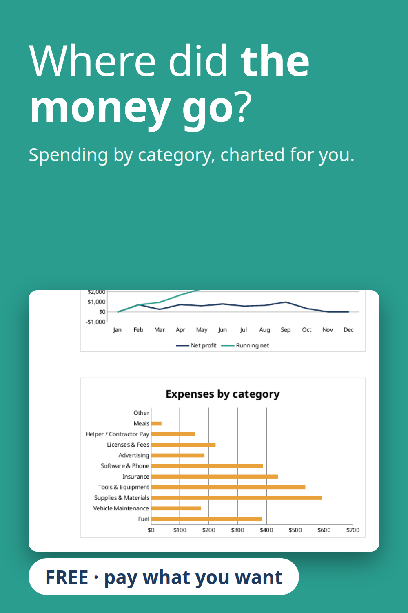

A free expense tracker that totals spending by category and charts it: fuel, supplies, tools, insurance, software, advertising and more. You can rename the categories to fit your business. Excel and Google Sheets, no macros. Pay what you want, including $0.
Get the free tracker on Gumroad
Built with the help of AI tools, then tested: every report number was recalculated separately.